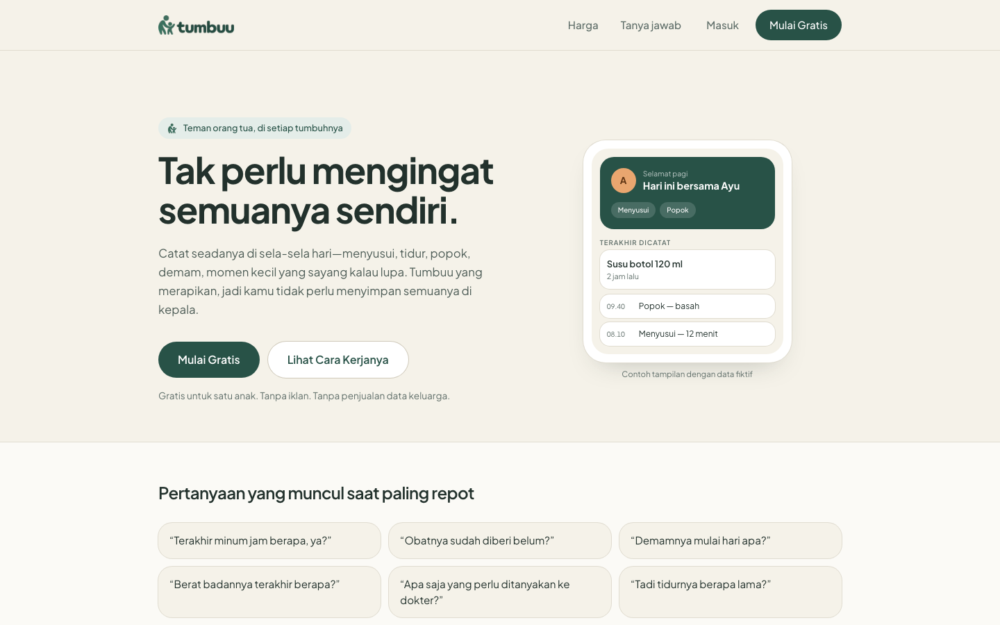
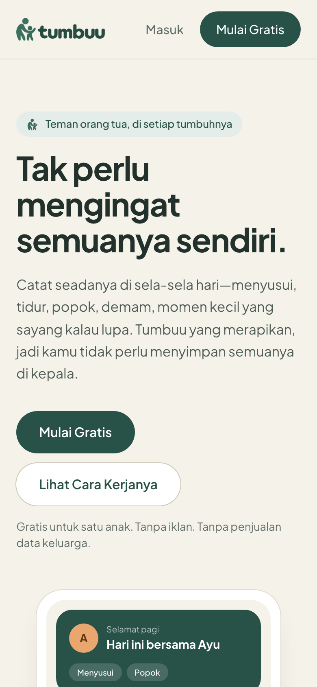
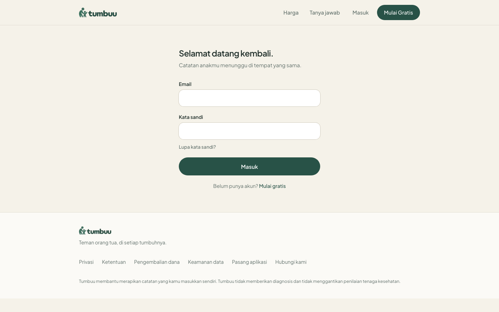
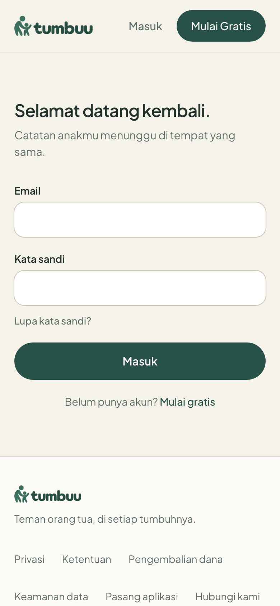

Tumbuu — a parenting tracker, built and launched
Parents get asked the same questions at the worst moments — when did she last drink, has the medicine been given, when did the fever start. Tumbuu lets them log it in seconds and hands it back as clean summaries. I designed, built and shipped it as my own product.
What parents see first


Questions that come up at the busiest moments
The answers usually end up scattered — some in a parent's head, some in a chat with their partner, the rest on paper or in the photo gallery. Tumbuu collects them in one place, without making parents do the work twice.
The design principle: log only what you can. Whatever gets logged is already enough to help later.
Four things Tumbuu looks after
Breastfeeding, bottle milk, meals, sleep, diapers, temperature and quick notes — saved in seconds, with the time pre-filled and editable.
Weight, height and head circumference as a history, plus a development checklist that follows Indonesia's Buku KIA, with the date each milestone was reached.
Illness records with symptoms, temperature, medicine and dosing history, doctor visits, costs and immunizations. Document attachments on Premium.
Unlimited stories, with up to 5 photos on the free plan.
Choices I made as the product owner
- No guessingEvery summary is computed only from what the parent logged. Tumbuu doesn't diagnose or replace a health professional, and says so on every page.
- Private by defaultRecords open only through the parent's account, and photos are stored privately — never behind public links.
- Location data strippedPhoto location data is removed on the device, before upload.
- Admin off the public internetInternal tools are reachable only over a private Tailscale network, so there is no public admin login to probe.
- No ads, no selling family dataStated up front, right next to the sign-up button.
- Free for one childIncludes a basic daily summary — useful on its own, not a trial.
- Premium tierAdds handover and doctor-consultation summaries, PDF reports and document attachments.
- Shared caregivingInvite up to 4 extra caregivers with their own accounts. Each can only edit what they logged, and access can be revoked anytime.
- Local paymentsHandled through Midtrans, with a published refund policy.
The stack
End to end — interface, API, database, storage, payments and backups.
| LAYER | TECHNOLOGY | WHAT IT DOES |
|---|---|---|
| App & API | Next.js | Landing pages, the logged-in app and the server-side API in one codebase; installable as a PWA. |
| Database | PostgreSQL | Children, caregivers, daily logs, growth, health records and subscriptions. |
| Authentication | Better Auth | Email + password sign-up and login, password reset, per-caregiver accounts. |
| File storage | Cloudflare R2 | Private storage for photos and documents. |
| Backups | Backblaze B2 | Off-site database backups. |
| Admin access | Tailscale | Internal admin tools on a private network, not exposed publicly. |
| Payments | Midtrans | Premium subscriptions with Indonesian payment methods. |
Behind the login
The app holds real family records, so only the parents' entrance is shown. The internal admin side sits on a private network and isn't public at all.


Screenshots captured from the public site in September 2026.